library(MASS) # Datasets library(mice) # Boys dataset library(dplyr) # Data manipulation library(magrittr) # Pipes library(ggplot2) # Plotting suite library(sf) # Spatial features
We use the following packages
New functions:
plot(): R’s plotting devicebarplot(): bar plot functionpie(): pie plot functionhist(): histogramdensity(): function that calculates the densityboxplot(): box plot function
Why visualise?
- We can process a lot of information quickly with our eyes
- Plots give us information about
- Distribution / shape
- Irregularities
- Assumptions
- Intuitions
- Summary statistics, correlations, parameters, model tests, p-values do not tell the whole story
Why visualise?
Source: Anscombe, F. J. (1973). “Graphs in Statistical Analysis”. American Statistician. 27 (1): 17–21.
Why visualise?

Source: https://www.autodeskresearch.com/publications/samestats
What we will do
- A few plots in
basegraphics inR - Plotting with
ggplot2graphics - Plotting data on maps
base graphics in R
Recall
- Vectors
height <- c(50.1, 53.5, 50.0, 54.5, 57.5) weight <- c(3.65, 3.37, 3.14, 4.27, 5.03)
- Data frames
boys <- boys head(boys)
## age hgt wgt bmi hc gen phb tv reg ## 3 0.035 50.1 3.650 14.54 33.7 <NA> <NA> NA south ## 4 0.038 53.5 3.370 11.77 35.0 <NA> <NA> NA south ## 18 0.057 50.0 3.140 12.56 35.2 <NA> <NA> NA south ## 23 0.060 54.5 4.270 14.37 36.7 <NA> <NA> NA south ## 28 0.062 57.5 5.030 15.21 37.3 <NA> <NA> NA south ## 36 0.068 55.5 4.655 15.11 37.0 <NA> <NA> NA south
Recall
To subset a vector use square brackets v[1:5]
To call a variable in the data frame, use the $ notation:
boys$hgt
boys$hgt[1:10]
## [1] 50.1 53.5 50.0 54.5 57.5 55.5 52.5 53.0 55.1 54.5
Scatter plot
plot(x = boys$hgt, y = boys$wgt, main = "Scatter plot",
xlab = "Height", ylab = "Weight", bty = "L")
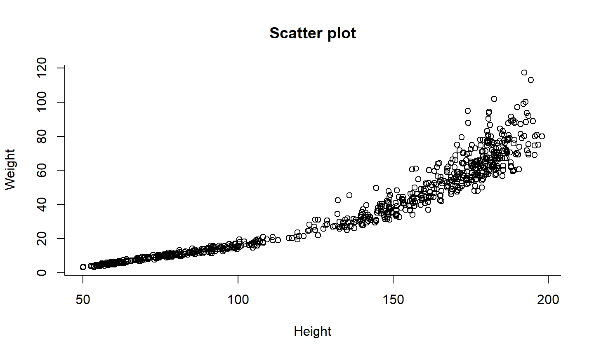
Scatter plot
Breaking this down:
plot( # Calling the base plot function
x = boys$hgt, # x coordinates
y = boys$wgt, # y coordinates
main = "Scatter plot",# Plot title
xlab = "Height", # x-axis label
ylab = "Weight", # y axis label
bty = "L" # Type of box around plot: "Shaped like an L"
)
See ?par for more graphical parameters
Scatter plot
Two ways of doing the same thing
plot(x = boys$hgt, y = boys$wgt) plot( wgt ~ hgt, data = boys)
The latter is the plot method for formulas. (Formulas are an R class!)
Line chart
plot(x = 1:5, y = exp(1:5), type = "l", main = "Line chart", bty = "L")
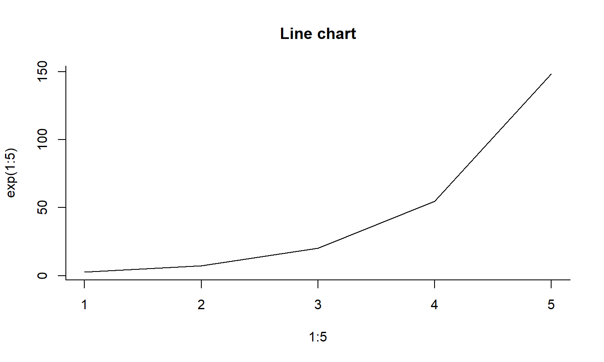
Bar chart
Beyond basic scatter/line plots, there are specific functions:
counts <- table(boys$reg) barplot(counts, main="Bar chart", ylab = "N")
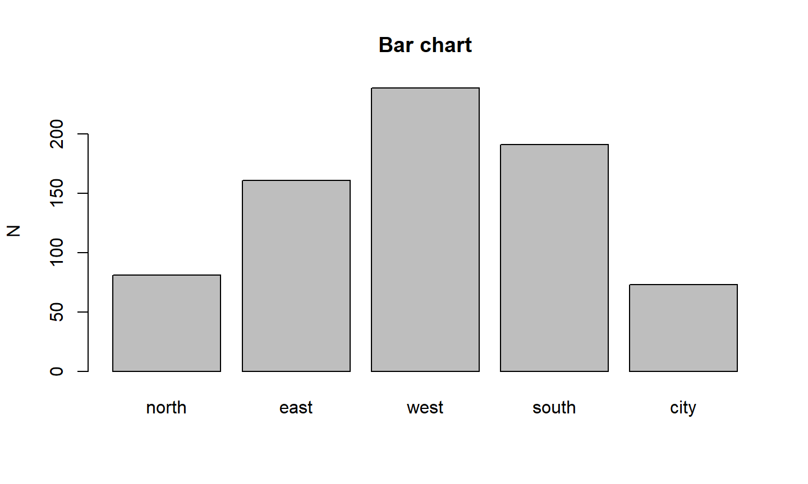
Pie chart
counts <- table(boys$reg) pie(x=counts, main="Pie chart")
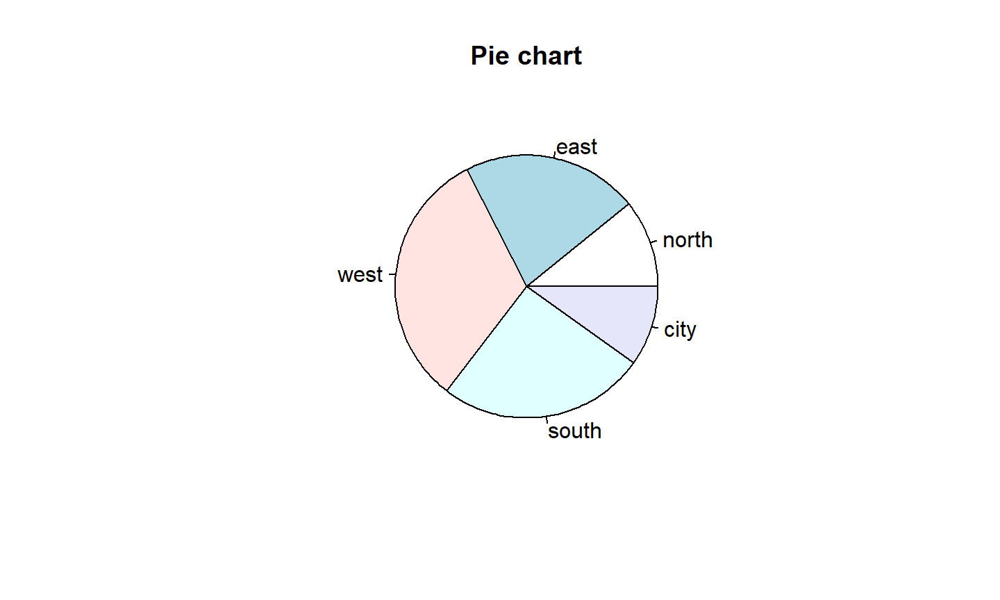
Pie chart
Let’s go one step back:
counts <- table(boys$reg) counts
## ## north east west south city ## 81 161 239 191 73
Histogram
hist(boys$hgt, main = "Histogram", xlab = "Height")
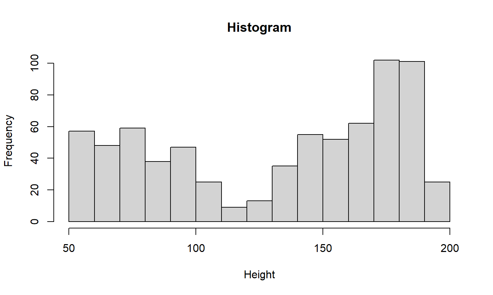
Box plot
boxplot(boys$hgt ~ boys$reg, main = "Box plot",
xlab = "Region", ylab = "Height")
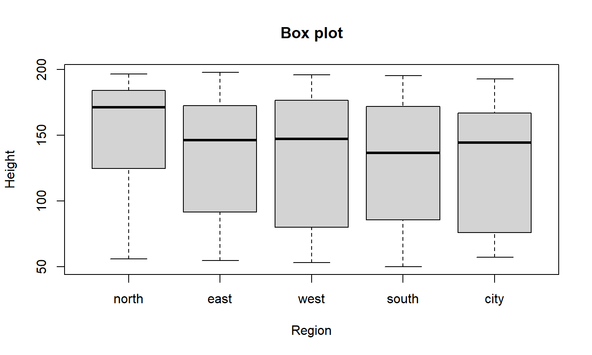
The alternative to base plots
- If we want to be able to set visual standards easily
- … and have a more unified graphics system
- … at the cost of some abstraction and a steeper intial learning curve
- we go
ggplot
ggplot2
What is ggplot2?
Layered plotting based on the book The Grammar of Graphics by Leland Wilkinsons.
With ggplot2 you
- provide the data
- define how to map variables to aesthetics
- state which geometric object to display
- (optional) edit the overall theme of the plot
ggplot2 then takes care of the details
An example: scatterplot
1: Provide the data
ggplot( data = boys )
2: map variable to aesthetics
ggplot( data = boys, aes(x = hgt, y = wgt) )
3: state which geometric object to display
ggplot( data = boys, aes(x = hgt, y = wgt) ) + geom_point()
An example: scatterplot
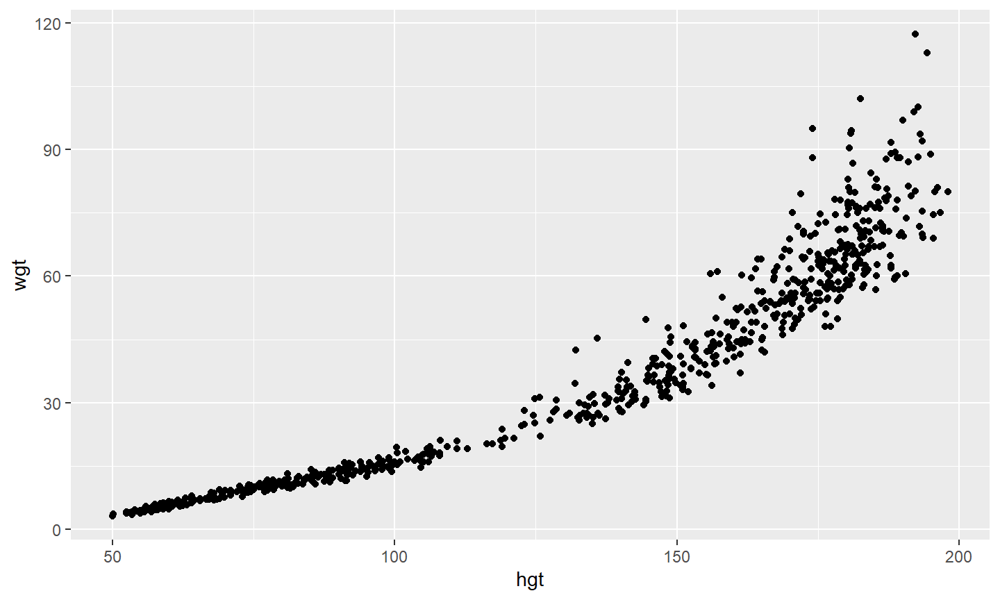
Why this syntax?
Create the plot
gg <- ggplot( data = boys, aes( x = hgt, y = wgt ) ) + geom_point( col = "dark green" )
Add another layer (smooth fit line)
gg <- gg + geom_smooth(col = "dark blue")
Give it some labels and a nice look
gg <- gg + labs(x = "Age", y = "BMI", title = "BMI trend for boys") + theme_minimal()
Why this syntax?
plot(gg)
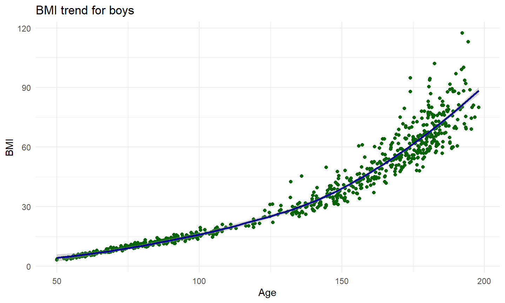
Aesthetics
- x
- y
- size
- colour
- fill
- opacity (alpha)
- linetype
- …
Aesthetics
gg <-
boys %>%
filter(!is.na(reg)) %>%
ggplot(aes(x = hgt,
y = wgt,
shape = reg,
colour = age)) +
geom_point( alpha = 0.5) +
labs(title = "Trend for boys",
x = "Height",
y = "Weight",
shape = "Region",
colour = "Age") +
theme_minimal()
Aesthetics
plot(gg)
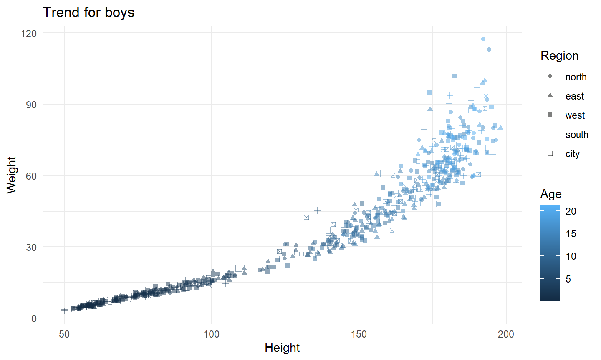
Geoms
geom_point
geom_bar
geom_line
geom_smooth
geom_histogram
geom_boxplot
geom_density
Geoms: Bar
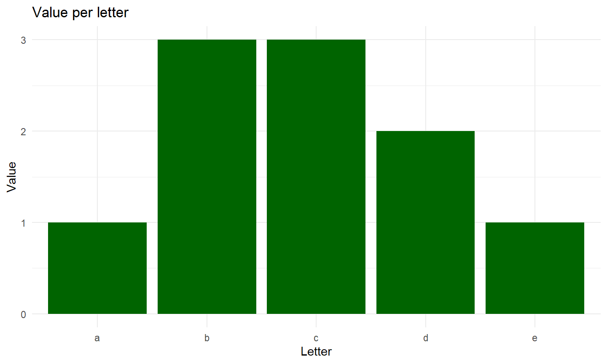
Geoms: Line
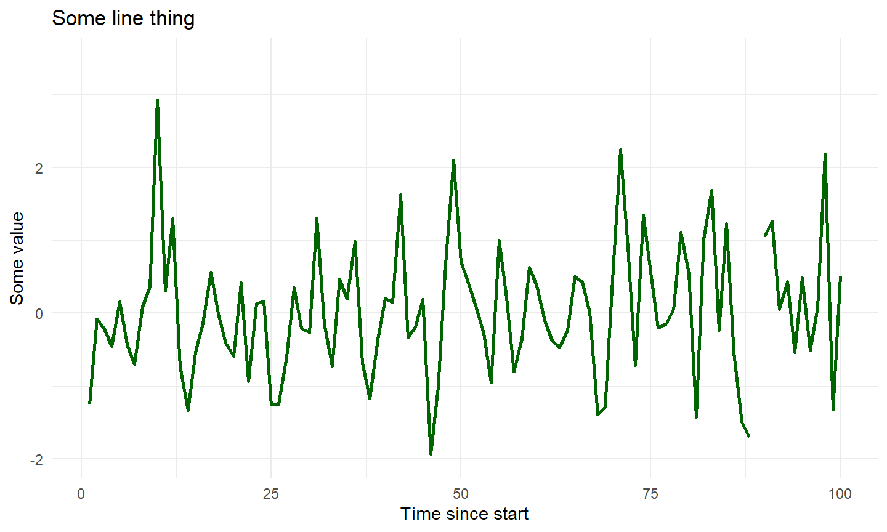
Geoms: Smooth
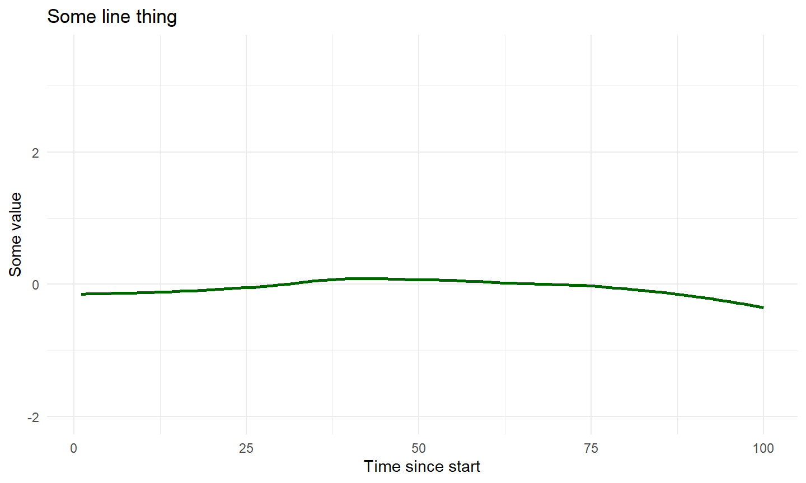
Geoms: Boxplot
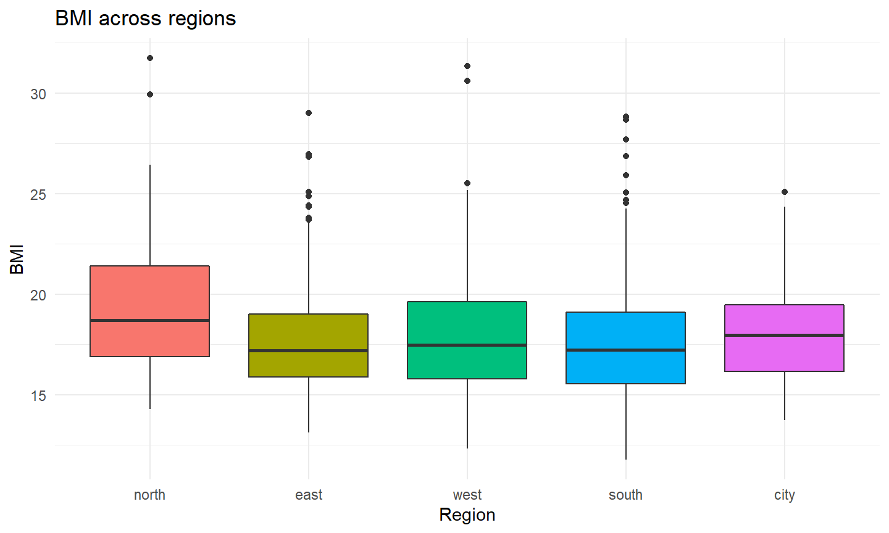
Facets
facet_wrap() and facet_grid() divide figures into panels.
boys %>% ggplot(aes(x = age, y = bmi)) + geom_point() + geom_smooth() + facet_wrap(~ reg)
Facets

Export figure
Easy with ggsave()
# save as pdf
ggssave("plot.pdf", myplot)
# save as png and specify dimensions
ggssave("plot.png", myplot, width = 7, height = 5, units="in")
Helpful link in RStudio

Maps
Simple Features
- A formal standard (ISO 19125-1:2004) that describes how objects in the real world can be represented in computers, with emphasis on the spatial geometry of these objects.
- As implemented e.g. in ArcGIS
- Implemented for R in the
sfpackage - Feature geometries are stored in
data.frames
We have time for a cursory introduction at most.
Reading in spatial data
denmark <- st_read("DK_map.shp")
plot(st_geometry(denmark))

Plotting regional attributes
denmark$proportion.over.70 <- denmark$over70/denmark$population
plot(denmark["proportion.over.70"],
main = "Proportion of population aged 70 years and above")
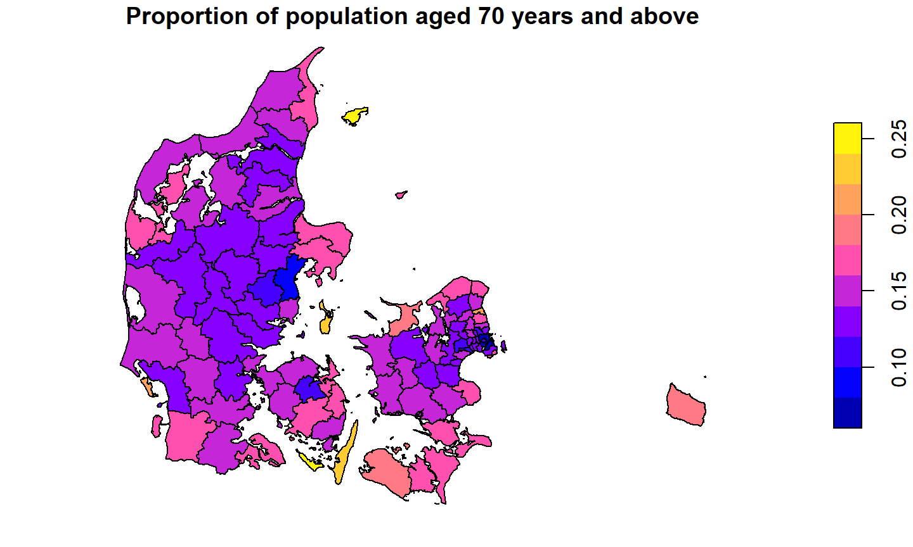
Or we can ggplot
denmark %>% ggplot(aes(fill=proportion.over.70)) + geom_sf()
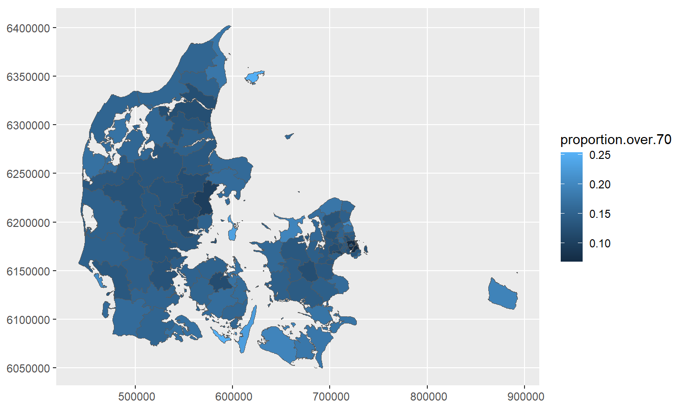